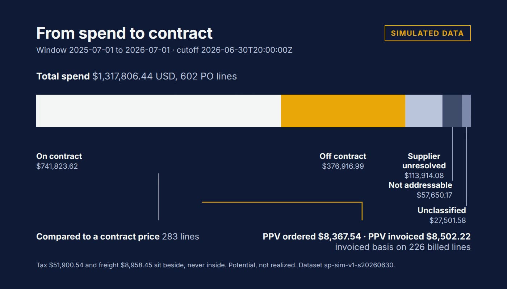

Dashboard · Procurement · Spend analytics · FastAPI · React · 2026-11
Which Purchases Carry Addressable Price Leakage, and Which Sourcing Action Is Worth Reviewing?
SpendPrism: a synthetic procurement price-leakage workbench. It compares what was paid with the effective contract price by item, supplier and business unit, keeps tax, freight, volume and FX beside the price figure instead of inside it, and shows the baseline, scope, exclusions and assumptions for every potential saving. Potential is never realized. Nothing here is real data.

Everything is synthetic: 25 invented suppliers and every figure come from a seeded generator (dataset sp-sim-v1-s20260630); declared defects and hidden truth sit in files the app never loads. A potential saving is a modelled quantity, never booked. Four screens render committed SQL-reference results and do not recompute after an edit; four run the engine in the browser and keep edits in memory only. The workbook's classification inputs are copied from the golden output. The actor header is a stand-in for authentication and the API is not hosted. The last independent QC accepted the UI for final audit with two low items open.
01 — The problem
Category managers see purchase-price variance, but it mixes price with tax, freight, volume, currency and lines that are not comparable. A number that looks like a saving may be none of those.
02 — What I built
A spend landscape with inline reconciliation, category detail, a comparable-price evidence table with exclusion reasons, a leakage queue, alias review, sourcing comparison and draft actions with outcome tracking. PPV on the ordered basis and on the invoiced basis are separate labelled figures, never added. Rules live in one written contract and are checked in SQL, in an independent Decimal recomputation and in the browser engine.
03 — How it was built
- 01
The decision and the contract
One contract defines the effective contract price, what is comparable and what is excluded, and what is out of scope: switching suppliers, creating POs, payment and realized-savings accounting.
- 02
A hand fixture first
Known-answer, negative and adversarial cases are asserted in SQL and recomputed independently in Python (120 checks). The case manifest requires 191 passing cases.
- 03
Synthetic procurement ledger with declared defects
A seeded generator writes suppliers, POs, receipts and invoices, with name variants, FX gaps, duplicate billings and split invoices declared in a separate defect file.
- 04
Golden outputs and a flow scene
The SQL reference writes eight golden files; the browser engine reproduces them byte for byte. The landing flow scene draws real USD amounts from the golden.
- 05
Evidence
214 browser tests pass, axe finds no violations on every route at two widths, Lighthouse accessibility is 100. Excel recalculates 27,045 formula cells with zero reconciliation differences, given classification inputs copied from the golden.
04 — Results
Measured on the synthetic release candidate (commit 7731285): 191 of 191 manifest cases, 61 API tests, 167 unit tests, 214 browser tests, 8 of 8 golden files byte-identical in SQL and in the browser engine. These describe generated data and this code; they say nothing about any real procurement team or saving.
05 — What I'd do next
- Publish the static site and re-read the mobile leakage and evidence compositions.
- Independent line logic for the reference twin and a classification check in Excel.
- Real authentication before any hosting.